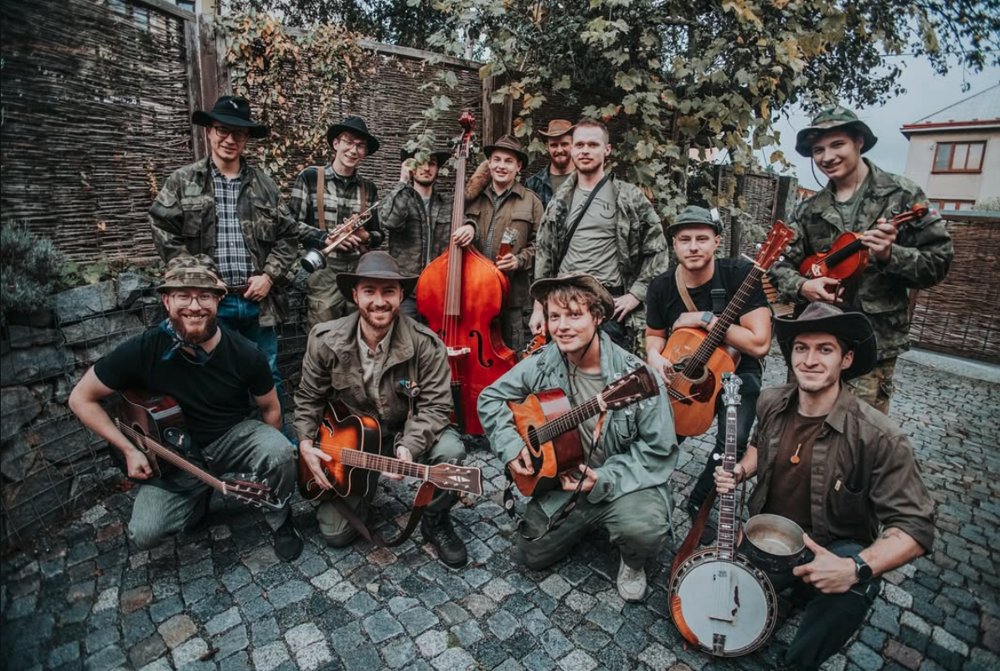

Jsme něco jako kapela z Hlinska (ne pod Hostýnem, ale v Čechách) snažící se hrát country a folkové písně. Tedy když nemáme zrovna v rukách půllitr piva.
Je nás jedenáct, plus mínus jedenáct. Záleží, jak se to zrovna sejde.
Mezi charakteristické vlastnosti naší kapely patří:
- Hra na různé hudební nástroje
- Prokládání pití piva a medoviny hraním a zpěvem
- Rušení koncertů
- Naprosté nepřiznání existence jiných než prvních slok a refrénů
- Třikrát dva bratři v kapele (včetně dvojčat)
- Pestrý repertoár (náhodný)
A my jsme:

Honza je kytarista a hlavní pohádkář. Jeho oblíbenou aktivitou je nemít čas na hraní s Čechchlínama a napodobování Řehoře Samsy.


Pepa je cajonista a majitel Karoqu. Je vrchním řešitelem grantu na Přírodovědecké fakultě Univerzity Palackého v Olomouci, kde se věnuje alchymii a syntéze Karibiku.


Martin je kontrabasista a příležitostný závodník na vozíčku pro invalidy. Rád leze po horozeleckých stěnách bez jištění. Má rád Bunbonambo a tančit tango.


David je banjista a vlastník posilovny. Občas na hraní chybí, ale přijde Králíček Alkáček, kterej taky hraje na banjo, tak nevím.. Rád chodí 100 kilometrů za dva dny. Jen tak.


Kryštof je houslista a nejmenší člen kapely. Na našich koncertech se občas přihodí i to, že je bez trička. Prej už nepije tvrdej.


Josef je houslista a nejmladší člen kapely. Dokonce studuje konzervatoř a zatím ho za to hraní s Čechhlínama nevyhodili. Zatím.

Tomáš je kytarista a ortodoxní tramp. Je charakterizován dobrou znalostí textů všech dobrých písní. Často se objevuje i v roli moderátora snažíce se našemu vystupování poskytnout jakousi strukturu.


Štepán je pianista a údajně vegan (nechápeme). Ale jde vidět že s piánem to fakt umí. A stává se z něho i takový béčkový Leoš Mareš. Ale nejvíce ho uvidíte, jak zrovna vymýšlí pěknou vyhrávku u klavíru či kláves


Matěj je kytarista a člen s největší mírou zodpovědnosti, takže je i pokladník. Na koncertech ho můžete vidět nasazovat kapodastr na libovolné pražce své kytary.


Štepán je kytarista a příležitostný akordeonista. Je to hroznej delikvent. K jeho oblibeným činnostem patří vytírání podlahy ve skautských klubovnách a posluchání podcastů při spaní.

Láďa je kytarista a prvotřídní forbínista. Jeho oblíbenou činností je jízda na motorce a hraní Highway to Hell. Jeho ordinační hodiny naleznete u Kotrby na vývěsce.